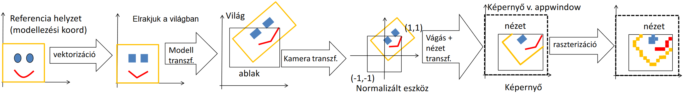

2D képszintézis
Van egy világ amit reprezentálni akarunk, ez világ koordinátarendszert használ, nekünk a célunk ebből a releváns részt a kamera ablakban megjeleníteni, a viewportba felrajzolni
Pixel vezérelt 2D képszintézis
Fogunk minden viewport-beli pixelt és visszakeressük, hogy az világkoordinátarendszerben melyik pontot reprezentálja
- Előny, hogy bármilyen transzformációt használhatunk, de hátrány hogy lassú
- Egy másik hátrány, hogy nem minden alakzatnál tudjuk megállapítani, hogy benne vagyunk-e.
- Megoldás lehet az implicit egyenlet, ahol ha \(f(x,y) = 0\), akkor a határon, ha \(< 0\) akkor benne, különben pedig kívül vagyunk.
- Parametrikus görbéknél más a megoldás pl. van az a színezési módszer, ahol az dönti el, hogy páros vagy páratlan számúszor mentünk át az alakzat határán (de ennek a hátrányairól órán nem beszéltünk)
- Az hogy mi legyen épp az előtérbe legjobb esetben egy listából halászható vissza
Objektum vezérelt képszintézis
Alakzatokat mozgatunk a világkoordinátarendszerben, a viewportban a kirajzolás hátulról (kis prioritásúaktól) kezdődik, így az van az előtérbe renderelve, ami legelöl van. Ráadásul nem is lassú
Megjelenítés menete: 
- vektorizáció (a modellt kirakjuk - pl. a kis háromszögeket)
CPU \(\Rightarrow\) GPU VAO - a modelltranszformációval elrakjuk valahova a világba
GPU Vertex shader - a kameratranszformáció eltranszformálja a normalizált eszközkoordinátarendszerbe (persze mi is csak akkor fogjuk látni, ha a kamera látná)
GPU pipeline - ezután a nézet hatása alá kerül és ki lesz vágva, ami felesleges
GPU pipeline - raszterializáljuk a képet (pixelenként felrajzoljuk ami látszik)
GPU fragment shader + frame buffer
Vektorizáció
Hogyan alakítjuk pontokra, szakaszokra és háromszögekre az alakzatainkat?
- A görbéket \(n\) pici szakaszra bontjuk, ahol a szakasz \(i.\) pontja \(r(t_i)\) érték (akkor tudjuk pontosan lekövetni a görbét, ha kicsi a különbség) \(t_i = t_{\text{start}} + (t_{\text{end}} - t_{\text{start}}) \cdot i / n\)
- A sokszögeket háromszögekre bontjuk:
- A konvex sokszögeknél van \(O(n)\)-es algoritmus
- A konkáv \(O(n^3)\)
- Tétel: minden 4+ csúcsú, egyszerű sokszögnek van diagonálja, azaz mindegyik felbontható diagonálok mentén
> egyszerű sokszög: ceruza felemelés nélkül megrajzolható és a határainak pontjait nem érinti kétszer
- Ez a konkáv alakzatokra is igaz
- Bizonyítás: veszünk egy csúcsot és a két szomszédját összekötjük 1 vonallal, ekkor két dolog történhet:
- az így kapott háromszögben nincs további csúcs \(\Rightarrow\) egy diagonált húztunk be
- ez a háromszög tartalmaz csúcsokat, (mert mondjuk egy konkáv cucc és kívülről még belógnak dolgok a berajzolt él fölött) ekkor az eredetileg kiválasztott csúcshoz legközelebbi belógó csúcsot diagonállal kötjük
-
Konkáv alakzatok felvágása:
- itt egyenként kell tesztelni a diagonál jelölteket, hogy nem metsz másik éleket és hogy a poligonon belül fut
- azért ilyen magas a komplexitás, mert: \(O(n)\) darab diagonál jelölt csúcspontunk van, amikre \(O(n \cdot (n - 3)/2)\) élet kell tesztelni.
-
Fülvágó algoritmus:
- ha van egy olyan \(p_i\) pont aminek a szomszédait diagonál köti össze, akkor a fül levágható
- (Már csak azt kell belátni ehhez, hogy minden poligonnak van füle)
- 2 fül tétel: minden 4+ csúcsú egyszerű sokszögnek van legalább 2 füle
- Bizonyítás: már beláttuk, hogy minden ilyen alakzat háromszögesíthető. Ekkor ha háromszögekre bontjuk az alakzatot és a területek legyenek gráf csúcsai (az élek pedig a diagonálok)
- Ez a gráf összefüggő, mert az alakzat összefüggő, továbbá nem tartaklmaz kört (mert ha tartalmazna és elvágnánk egy élét, akkor az összefüggése megmaradna) \(\Rightarrow\) ez egy fa gráf \(\Rightarrow\) minden fának van legalább 2 levele \(\Rightarrow\) mindig lesz mit levágni
Kamera transzformáció
- 2 fontos lépése van:
- View transzformáció: a kamera középpontját az origóba kell viszatolni \(x_{cam} = x_{world} - c_x \qquad y_{cam} = y_{world} - c_y\) (ahol \(c_x, c_y\) a kamera közepe) \(\begin{pmatrix} 1 & 0 & 0 & 0 \\ 0 & 1 & 0 & 0 \\ 0 & 0 & 1 & 0 \\ -c_x & -c_y & 0 & 1 \\ \end{pmatrix}\)
- Projekció: a kamera ablakot a normalizált eszköz koordinátarendszerbe kell tenni \(\begin{pmatrix} 2 / w_x & 0 & 0 & 0 \\ 0 & 2 / w_y & 0 & 0 \\ 0 & 0 & 1 & 0 \\ 0 & 0 & 0 & 1 \\ \end{pmatrix}\)
- Ezeket megszorozva a modellezési transzformációs mátrixszal a világkoordinátarendszerből az ablak terébe tudunk mozgatni mindent
- Ennek a 3 mátrixnak a szorzata az MVP mátrix (Model View Projection)
- (a vertex-ek MVP mátrixal történő szorzását a vertex shader-ben kell megírni)
Vágás
- Mégis hogyan döntjük el, hogy mi az ami nincs benne a viewportban?
- Minden pont ami belül van \(-1\) és \(1\) közötti koordinátákkal rendelkezik \(\Rightarrow\) a 4 oldal mentén körbemegyünk és azokat a pontokat kivágjuk, amik nem teljesítik

- ez pontokra egészen jól működik, de a szakaszok meg háromszögek sarkainak kivágása nem túl optimális.
- Minden pont ami belül van \(-1\) és \(1\) közötti koordinátákkal rendelkezik \(\Rightarrow\) a 4 oldal mentén körbemegyünk és azokat a pontokat kivágjuk, amik nem teljesítik
- Szakasz vágás:
- ha \(x > x_{\text{max}}\), akkor mit lehet tenni
- mivel a szakasz az egy egyenes, aminek van két végpontja, ezért felírható: \(x(t) = x_1 + (x_2 - x_1) \cdot t\)
- \(x_{\text{max}}\)-ot az alábbi \(t\) értéknél metszik: \(\displaystyle t = \frac{(x_{\text{max}} - x_1)}{(x_2 - x_1)}\)
- akkor a túl lógó pontot helyettesítsük: \(\displaystyle \left(x_{\text{max}} \ , \ y_1 + (y_2 - y_1) \cdot \frac{(x_{\text{max}} - x_1)}{(x_2 - x_1)} \right)\)
- Poligon vágás:
- 3D Vágás homogén koordinátákkal:
- \(X(t) = X_1 \cdot (1 - t) + X_2 \cdot t\)
- Ekkor a cél, hogy: \(-1 < x = X / w < 1\) Amit valójában a GPU úgy valósít meg, hogy: \(-w < X < w\)
- Ha vágni kell, akkor a szakasz vágáshoz hasonlóan csinálja (persze nem csak X, hanem Y és Z koordinátára is)
Viewport transzformáció
-
Amikor normalizált eszközkoordinátákból képernyő koordinátákba visszük át (pixelekre)

(ahol
glViewport(vx, vy, vw, vh))
\(x_{pix} = v_w (x_{norm} + 1) / 2 + v_x\)
\(y_{pix} = v_h (y_{norm} + 1) / 2 + v_y\)
Raszterizáció
-
Pontok kirajzolása: mivel a pont nem biztos, hogy egy egész helyen van, ezért kerekítjük a koordinátáit és azon a helyen lévő pixelt rajzoljuk ki
-
Szakaszok kirajzolása:
- \(y = mx+b\) alapon növeljük x-et és az \(y\) értéket kerekítve megkapjuk a pixelt, amit ki kell színezni
- De ez lassú! Minden pont kiszínezéséhez egy szorzást meg egy összeadást kell elvégezni + kerekíteni
- Megoldás: inkrementális elv, 1-szer kiszámoljuk az m-et és mindig csak hozzáadjuk
\(y(x) = y(x-1) + m\)
- De itt még mindig kerekíteni kell
- (csak azt az esetet tárgyaltuk amikor \(m > 0\))
- Fixpontos inkrementális számítási elv:
const int T = 12; // fractional bits LineFix (short x1, short y1, short x2, short y2) { int m = ((y2 - y1) << T) / (x2 - x1); int y = (y1 << T) + (1 << (T - 1)); // +0.5 for(short x = x1; x <= x2; x++) { short Y = y >> T; // trunc write(x, Y, color); y = y + m; } } - a lényeg, hogy ugyanúgy inkrementális, csak a bit shifttel végzi el a kerekítést, ami már nagyon gyors
- Ezt egy DDA szakaszkirajzolo hardver vegezheti el, amivel meg sokkal gyorsabb (szimplan 3 regiszter, meg 1 osszegzo)
- \(y = mx+b\) alapon növeljük x-et és az \(y\) értéket kerekítve megkapjuk a pixelt, amit ki kell színezni
- Háromszög kitöltés:
- itt is inkrementális elv és soronként érdemes csinálni és ha egy határt érintünk, akkor kezdődik a háromszög
- az inkrementális elv a textúrázásnál is fontos lehet, hiszen a csúcsok között ahogy lépegetünk úgy tudjuk interpolálni a megadott textúrát
Kvíz
1. Hány diagonálja van egy szabályos 5-szögnek?
Válasz: 5
Magyarázat: Szabályos sokszögeknél az átlók száma (\(\frac{n \cdot (n-3)}{2}\))
2. A 2D világba tett kamera középpontja (168,968) a kameraablak szélessége 14 magassága 7. Mi lesz az (221,16) világkoordinátarendszerbeli pont megfelelőjének x koordinátája normalizált eszközkoordinátarendszerben?
(Nem kell túlgondolni)
- A kamera középpontja a normalizált eszkkoord. rendszerben: \((0, 0)\)
- Az innen relative \(+(7, 3.5)\) világkoordináta lesz a \((0.5, 0.5)\) (ez az ablak szélességből látszik)
-
Vagyis a kapott pontunk pozíciója: \(\displaystyle \left(\frac{(221 - 168)}{14 / 2}, \frac{(16 - 968)}{7 / 2} \right) = \left(\frac{53}{7}, \frac{-952}{3.5} \right) = (7.5714, -272)\)
(azért kell /2-vel számítani a képernyőszélességet, mert a normalizált az [-1, 1] intervallumon van, vagyis a szélessége 2 lenne)
3. Nevezzük a szorzást és az osztást összefoglalóan bonyolult műveletnek, az összeadást és kivonást pedig egyszerűnek. Hány bonyolult műveletet hajt végre egy inkrementális háromszögkitöltő algoritmus az
(279,644), (14,770), (537,748)
csúcsú (pixelkoordinátákban) háromszög kitöltésekor?
- A háromszög 3 oldalán lévő egyenesek meredekségét fogjuk osztással kiszámolni \(\Rightarrow\) 3 osztás történik
4. A szakasz két végpontjának koordinátái normalizált eszközkoordinátarendszerben:
(-3.7;0.2;-0.5), (4.7;0.2;-0.5)
Mi lesz az első pont x koordinátája a vágás után?
Válasz: -1
Magyarázat: ha túl megy a határon, akkor le kell vágni. Ilyenkor a vágott rész a határhoz kerül
5. Hány diagonálja van az alábbi 5-szögnek?
Válasz: 0 Nem tudsz úgy berajzolni, hogy az ne az alakzaton kívül legyen
6. DDA algoritmus 16 bites törtrésszel dolgozik. Mennyivel nő a y regiszter értéke egészként értelmezve a tárolt bináris számot, két egymást követő pixel között, ha a szakasz két végpontja pixel koordinátákban:
(29,21), (86,39)
\(T = 16\)
\(M = ((y_2 - y_1) << T) / (x_2 - x_1)\)
Vagyis \(M = ((39 - 21) << 16) / (86 - 29) = 18 \cdot 2^{16} / 57 = 20 695\)
(itt a törtrészt le kell vágni, mert int-re cast-olunk)
7. Melyek az alábbiak közül az igaz állítások?
- Igaz állítások:
- Minden fagráfnak van legalább két levele.
- Minden több mint három csúcsú egyszerű sokszög felbontható háromszögekre a diagonáljai mentén.
- Van olyan több mint három csúcsú sokszög, amelynek nincs diagonálja. (kettővel fentebb a példa)
- A diagonálok mentén végrehajtott felbontás nem egyértelmű.
- Minden több mint három csúcsú egyszerű sokszögnek van legalább két füle.
- Hamis állítások:
- A háromszögeket egy gráf csomópontjainak tekintve, a diagonálokat pedig a két oldalukon lévő háromszögeknek megfelelő csomópontok közötti élnek, a keletkező gráf tartalmazhat kört.
- Minden több mint három csúcsú sokszögnek van legalább két füle. (nem, ha nem egyszerű)
8. Melyek az alábbiak közül affin transzformációk?
- Az (1, 3) pont körüli forgatás (ez egy eltolás és forgatás)
- Helyben hagyás
- x tengely mentén végrehajtott skálázás
- Origóra tükrözés
- Nyírás: x'=x; y'= y+ax (igen, ez is tekinthető annak)
- Eltolás
- x tengelyre vetítés
9. Az alábbi 2D homogén lineáris transzformációs mátrix hány fokos elforgatást valósít meg:
0, -1, 0
1, 0, 0
0, 0, 1Nyilván végtelen sok helyes válasz van, amelyek 360 fok egész számú többszörösében különböznek. A minimális abszolút értékű megoldást várjuk.
\(\cos(\varphi) = 0\) és \(\sin(\varphi) = -1 \Rightarrow \varphi = -90\)
10. Hány füle van az alábbi 5-szögnek?
Válasz: 0
Magyarázat: Ha nincs diagonálja, akkor füle sincs (mert a fül az amikor egy pont szomszédai összeköthetők diagonállal)
11. Nevezzük a szorzást és az osztást összefoglalóan bonyolult műveletnek, az összeadást és kivonást pedig egyszerűnek. Hány bonyolult műveletet hajt végre a GPU a fix műveleti egységben összesen egészen a pixel árnyalóig, egységmátrix MVP és az alábbi kételemű vbo által definiált szakasz feldolgozásakor és alábbi csúcspont árnyalót feltételezve:
VBO = (0, 0.1, -0.4, 0.5), (-0.2, -0.3, 0.2, 0.9)Csúcspont átnyaló program:
uniform mat4 MVP; layout(location = 0) in vec4 v; void main() { gl_Position = v * MVP; }
Válasz: 7
Magyarázat:
- \(2 \cdot 4\) a pontok és az MVP szorzása.
- MVP egy egységmátrix, meg amúgyis 4 szorzás lenne
- Viszont ott ahol 0-val szoroznánk, ott tolhatunk egy
return 0-t vagyis -1 szorzást végzünk el
- A DDA-hoz tartozó osztás pedig azért nem számít, mert az már a raszterializálásnál a csúcspont árnyalás után történik \(\Rightarrow 8-1 = 7\)